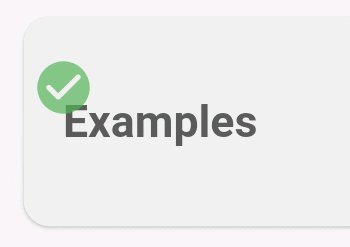
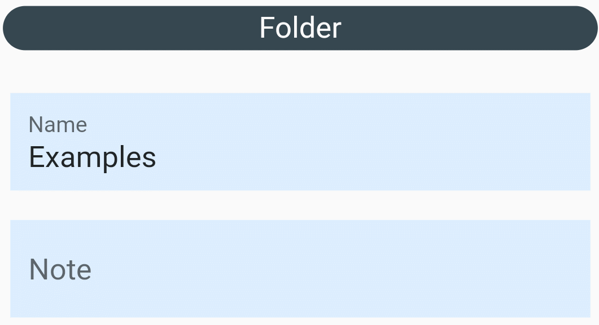
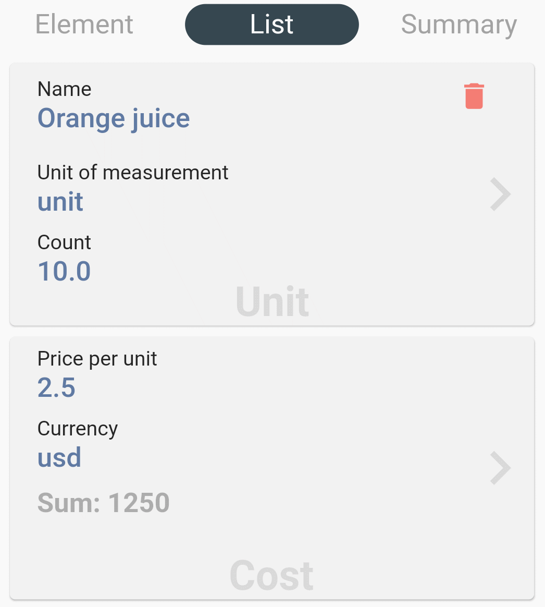
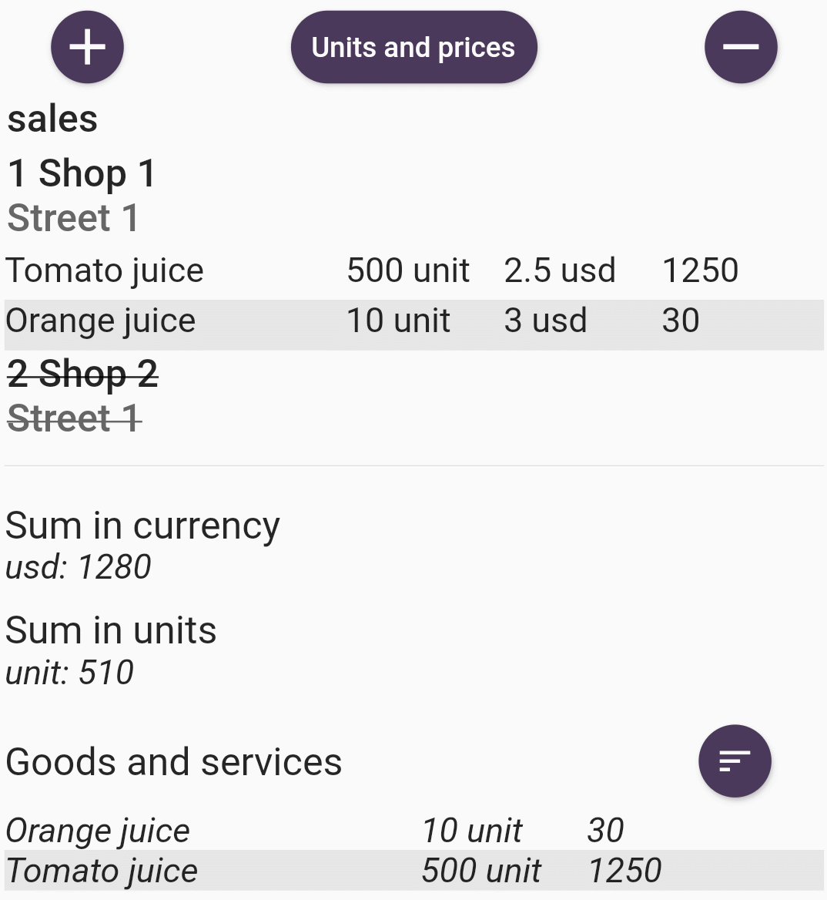

Calculated - это ваш помощник в вашей деятельности, бизнесе и иных задачах. Создавайте готовые к использованию документы или черновые версии документов. Ведите учет или планируйте деятельность. Далее в рецептах, ниже приведены примеры использования приложения под различные задачи.
Ваши данные хранятся на вашем устройстве и никуда не передаются. Всю обязанность по приватности и сохранению данных пользователь берет на себя.
В текущий момент приложение работает под андроид версии 29 и выше. Планируется так же выхож под айтюнс.
Все изменения сохраняются сразу и автоматически.
Для редактирования смахните каталог/элемент вправо -
Для удаления смахните каталог/элемент влево -
Для выделения удерживайте каталог/элемент некоторое время, для снятия выделения аналогично -
При нажатии на элемент вы спускаетесь на уровень ниже в дереве проекта. Дерево проектов состоит из каталогов и элементов.
Каталоги предназначены для удобства сортировки ваших проектов. Каталог может содержать в себе другие каталоги или элементы. Вы можете передать всю информацию из каталога включая подразделы, для этого откройте каталог для редактирования, выберите поделиться - файл данных - clcltd. Каталогу можно задать наименование и примечание.
Элементы имеют более расширенное применение и функции. Так же как и каталоги элементы можно передавать в виде файлов данных, задать им наименование и примечание. Дополнительно элемент можно передать в открытом формате электронных документов (PDF) и формате электронных таблиц, включая все подразделы. Ему можно задать порядковый номер в списке, по умолчанию номер задается максимальный в текущем разделе. Параметр активен предназначен для визуального использования, данный элемент будет во всех списках помечен как перечеркнутый или не будет выводится в случае если задана настройка Цвет индивидуальная настройка. Помечайте значимость данной задачи цветом или используйте для других целей.

Экран элемента содержит два дополнительных под экрана - список и итоги. Вкладка список содержит товары и услуги используемые в вашем проекте, добавляйте и удаляйте их по вашей необходимости
После добавления товаров или услуг вы можете заполнить необходимые для вас поля: наименование, измерение наименования, количество, цена за единицу и валюта. Примеры решения различных задач смотрите в рецептах. Вкладка итоги содержит итоговые данные всего дерева проекта, в итоги входяыт и текущий элемент и все подэлементы
Вы можете увеличить или уменьшит шрифт в данном отчете, так-же сортировать список по наименованию/количеству, вывести только использованные товары и услуги.
С помощью операций Копировать, Вырезать, Вставить, Выбрать все - управляйте содержанием элементов и каталогов. В меню настроек вы можете выбрать язык и задать параметры которые будут отражаться на всех итогах.
Это файл в формате JSON. Может быть сформирован и передан из любой внешней системы. Формат файла:
{
"e":[
{
"ElementUUID":"уникальный идентификатор элемента",
"ElementParentUUID":"уникальный идентификатор родителя элемента, для элемента верхнего уровня пустое значение",
"ElementName":"Наименование элемента",
"ElementNote":"Заметка к элементу",
"ElementType":"ElementType.Element, ElementType.Folder",
"ElementCanceled":0 или 1,
"ElementColor":"red, green, blue, black",
"ElementPosition":позиция - Integer 0-999.
},.....
],
"ems":[
{
"ElementUid":"уникальный идентификатор элемента к которому привязан товар или услуга<",
"Uid":"уникальный идентификатор товара или услуги",
"Name":"Наименование товара или услуги",
"UnitName":"Единица измерения",
"UnitOutcomeCnt":Количество - double,
"UnitOutcomeCost":Стоимость - double,
"UnitOutcomeCurr":"Валюта"
},.....
]
}
Откройте приложение и добавьте новый каталог, нажав кнопку «+». Задайте наименование каталога - «Текущие дела», добавляйте элементы указывая необходимые задачи.
Откройте приложение и добавьте новый каталог, нажав кнопку «+». Задайте наименование каталога - «Расходы» или «Доходы», нажмите кнопку назад. Нажмите на созданный каталог, опустившись в содержание каталога создайте элемент, задайте наименование элемента, например - «Апрель». Нажмите кнопку назад и затем нажмите на вновь созданный элемент. Создайте новый элемент с датой расходов, например - «01». В содержании элемента переключитесь на вкладку список, добавляйте товары и услуги указывая: наименование, единицы измерения, количество, цену за единицу и валюту. Вы можете не указывать стоимость товара за единицу, можно внести только наименование товара или услуги, а в единице измерения внести валюту и в количестве указать количество валюты. В содержании элемента «Апрель», на вкладке итоги смотрите итоги и содержание всех дней.
Откройте приложение и добавьте новый каталог, нажав кнопку «+». Нажмите на созданный каталог, опустившись в содержание каталога создайте элемент, задайте любое наименование элемента, например — наименование контрагента или прайс листа. В содержании элемента переключитесь на вкладку список, добавляйте товары и услуги указывая: наименование, единицы измерения, количество, цену за единицу и валюту. По завершении можете передать документ в формате PDF, XLS или выгрузить файл данных вашим коллегам. Можете сделать декомпозицию данного элемента например отделив прайс листы овощей и фруктов.
Откройте приложение и добавьте новый каталог, нажав кнопку «+». Нажмите на созданный каталог, опустившись в содержание каталога создайте элемент, задайте любое наименование элемента, например — планирование / ремонт / смета. Перейдите в раздел список и вносите необходимые материалы, услуги. Можете сделать декомпозицию данного элемента например отделив ремонт спальни и прихожей.